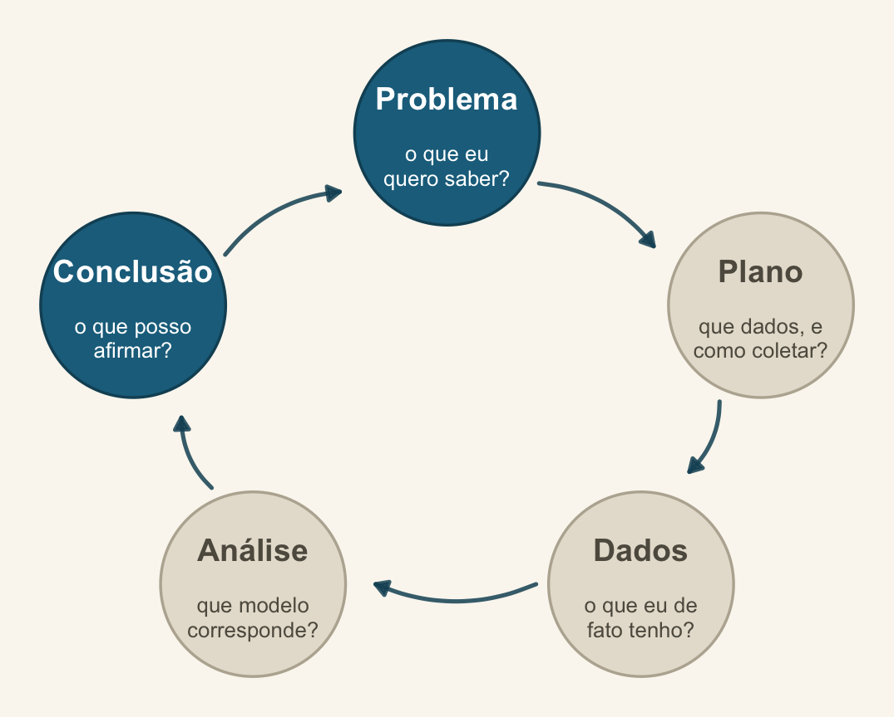
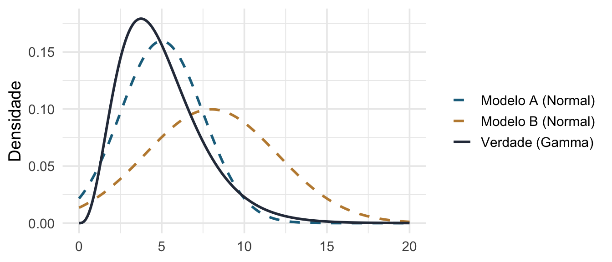
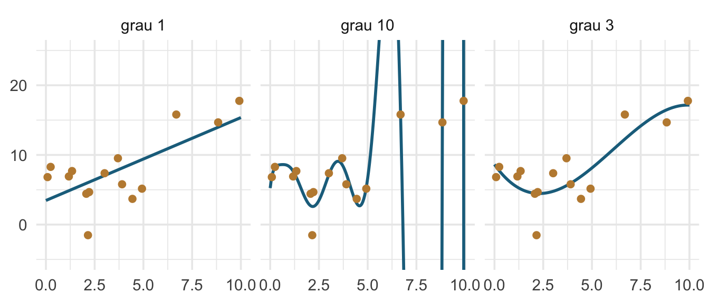
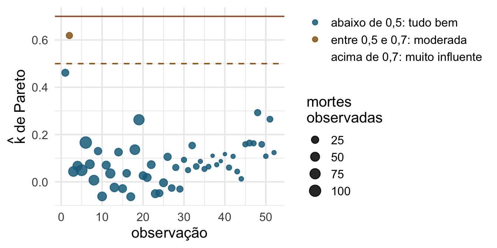

Encontro 9 · Análise de Dados Univariados · PPGBA/UFMS
25 de setembro de 2026

Conclusão — e a volta ao Problema: o conjunto de modelos candidatos é uma lista de hipóteses biológicas, não um espaço de busca.
Vocês ajustaram cinco modelos plausíveis. Todos rodam. Todos têm diagnóstico aceitável.
Qual reportar? E, antes disso: por que essa pergunta é mais perigosa do que parece?
Bloco 1 (≈ 3,5 h)
Bloco 2 (≈ 45 min) — WAIC, PSIS-LOO e o fecho bayesiano
Nos dados de atropelamento há 20 variáveis de paisagem e 52 sítios.
Em grupos, 10 minutos: como vocês decidiriam quais variáveis entram no modelo final? Escrevam o procedimento, passo a passo.
Guardem o que escreveram. Vamos voltar a ele no fim da manhã.
O procedimento padrão do século XX: hipótese nula, valor de p, limiar de 0,05, rejeita ou não rejeita. Só que ele não nasceu inteiro — nasceu de duas escolas que brigavam entre si.
Fisher (1925), em Statistical Methods for Research Workers, monta a primeira metade: uma hipótese só, o p como medida contínua de discrepância, e a origem do 0,05, que ele apresenta como conveniência — “it is convenient to take this point as a limit” — e não como regra.
Neyman & Pearson (1928) montam a segunda: testar contra uma alternativa, por razão de verossimilhança. O arcabouço que a gente de fato usa, com erro tipo I, erro tipo II e poder, só fica pronto em 1933.
O detalhe que quase ninguém conta: Fisher rejeitava a versão dos outros dois, e vice-versa. O que virou receita de livro-texto é um híbrido que nenhum dos lados endossaria — é por isso que chamamos de ritual, e não de método. Ver Gigerenzer (2004).
Formular várias hipóteses como modelos concorrentes, definidos a priori, e perguntar qual deles descreve melhor os dados — com uma medida de quanto melhor.
Não é uma correção técnica ao valor de p. É outra pergunta.
A ideia tem três tempos. Chamberlin (1890) a propôs como postura, sob o nome de “múltiplas hipóteses de trabalho”: manter várias explicações vivas ao mesmo tempo, para não se apaixonar por uma. Platt (1964) a transformou em método, a strong inference — formular as alternativas, desenhar o teste que exclui pelo menos uma, repetir — e argumentou que os campos que avançam rápido são os que fazem isso. Akaike (1974) deu a ela uma métrica, que é o que veremos hoje.
\[ D_{KL}(f \parallel g) = \int f(x)\,\log\frac{f(x)}{g(x)}\,dx \]
Quanta informação se perde ao usar o modelo \(g\) para representar o processo real \(f\).
É uma distância dirigida: de \(f\) (a verdade) até \(g\) (o seu modelo).

O modelo A perde menos informação que o B. A divergência KL quantifica isso.
Para calcular \(D_{KL}\) você precisa conhecer \(f\) — a verdade. Se a conhecesse, não estaria modelando.
A contribuição de Akaike (1974): embora \(D_{KL}\) seja incalculável, a diferença de \(D_{KL}\) entre dois modelos pode ser estimada a partir dos dados. E o estimador é simples.
\[ \mathrm{AIC} = -2\log \hat{L} + 2K \]
O termo \(2K\) não é uma penalidade arbitrária por complexidade. Ele é a correção do viés do próprio \(\log \hat{L}\) como estimador da divergência.

O polinômio de grau 10 ajusta melhor estes 15 pontos e prediz pior os próximos 15. O AIC existe para arbitrar esse conflito.
AICc dAICc df weight
nb 393.6 0.0 3 1
poisson 634.5 240.9 2 <0.001A NB gasta um parâmetro a mais — é a coluna df — e ganha 241 unidades de AICc. O peso de Akaike da Poisson não chega a 0,001.
15 minutos.
Na volta: AICc, BIC, e quando usar cada um.
\[ \mathrm{AICc} = \mathrm{AIC} + \frac{2K(K+1)}{n - K - 1} \]
AIC AICc n
393.1 393.6 52.0 Regra prática de Burnham & Anderson (§2.4, p. 66): “we advocate the use of AICc when the ratio \(n/K\) is small (say \(< 40\))”. Como AICc converge para AIC quando \(n\) cresce, use AICc sempre — não há custo. E nunca misture os dois critérios na mesma análise.
\[ \mathrm{BIC} = -2\log \hat{L} + K\log n \]
| AIC | BIC | |
|---|---|---|
| Objetivo | melhor predição | identificar o modelo verdadeiro |
| Pressupõe que a verdade está no conjunto? | não | sim |
| Penalidade | \(2K\) | \(K \log n\) — mais severa com \(n\) grande |
| Tende a escolher | modelos maiores | modelos menores |
Aho, Derryberry & Peterson (2014) chamam isso de visões de mundo distintas, e não de duas aproximações do mesmo alvo. O AIC assume que a realidade é mais complexa que qualquer modelo do conjunto e busca o que melhor prediz; o BIC assume que o modelo gerador está entre os candidatos e busca identificá-lo.
Em ecologia, a premissa do BIC raramente é defensável: é implausível que o processo que gerou a comunidade esteja entre os cinco modelos que você escreveu. Por isso o AICc é o padrão da área. Mas o ponto de Aho e colegas é que a escolha entre os dois precede os dados, e deve ser justificada pela pergunta.
modelos <- list(
nulo = MASS::glm.nb(TOT.N ~ 1, data = RK),
parque = MASS::glm.nb(TOT.N ~ D.PARK_km, data = RK),
habitat = MASS::glm.nb(TOT.N ~ OPEN.L + MONT.S, data = RK),
agua = MASS::glm.nb(TOT.N ~ L.WAT.C + D.WAT.RES, data = RK),
parque_agua = MASS::glm.nb(TOT.N ~ D.PARK_km + L.WAT.C, data = RK)
)O nome de cada modelo é a hipótese, não a lista de variáveis:
| Modelo | A frase que ele afirma |
|---|---|
nulo |
a mortalidade não varia com nada que eu medi |
parque |
o que importa é a distância à área-fonte de animais |
habitat |
o que importa é a composição da paisagem ao redor |
agua |
o que importa é o acesso a corpos d’água |
parque_agua |
fonte e água agem juntas, e nenhuma das duas sozinha |
Se você não consegue escrever a coluna da direita antes de ajustar, o conjunto não foi definido a priori — foi definido pelos dados, e os pesos deixam de significar o que dizem.
Van Buskirk (2005) mediu 83 lagoas na Suíça ao longo de sete anos e montou 16 modelos para a ocorrência e a densidade de oito espécies de anfíbios. Ele os divide em dois grupos.
Treze modelos-núcleo, cruzando três categorias de covariáveis — abióticas locais, bióticas locais e de paisagem — cada uma sozinha e em todas as combinações, com versões lineares e quadráticas onde a teoria previa ótimo intermediário.
Três modelos batizados com o nome da ideia, cada um vindo de um programa de pesquisa diferente:
| Modelo | Covariáveis | O que afirma |
|---|---|---|
| hydroperiod model | ano, permanência, competidores | persistência da lagoa e competição governam a distribuição |
| Wellborn model | ano, permanência, predação, peixes | o que governa são as transições de predador ao longo do gradiente |
| competition model | ano, competidores | só a competição importa |
Os modelos têm nome de hipótese, não de variável. “Wellborn model” é uma citação a um artigo de 1996 traduzida em preditoras — quem lê sabe o que está sendo testado antes de ver qualquer número.
O resultado, no resumo do próprio artigo: os dados apoiam fortemente os modelos que incluem covariáveis locais e de paisagem ao mesmo tempo — ou seja, nenhum dos programas de pesquisa isolados venceu.
Três detalhes de ofício que valem copiar: ele usa AICc, troca para QAICc quando o \(\hat{c}\) do modelo global passa de 1, e declara um modelo sem apoio quando a razão de evidência fica abaixo de 0,1 — um décimo do peso do melhor. E justifica por que não usou stepwise citando Anderson et al. (2000): valores de p são “a poor criterion for selecting among alternative models”. Van Buskirk, J. 2005. Local and landscape influence on amphibian occurrence and abundance. Ecology 86:1936–1947.
tab <- tibble(
modelo = names(modelos),
K = map_dbl(modelos, \(m) attr(logLik(m), "df")),
AICc = map_dbl(modelos, aicc)
) |>
arrange(AICc) |>
mutate(delta = AICc - min(AICc),
vero_rel = exp(-0.5 * delta),
peso = vero_rel / sum(vero_rel))
tab |> mutate(across(c(AICc, delta), \(x) round(x, 1)),
peso = round(peso, 3)) |>
dplyr::select(modelo, K, AICc, delta, peso)# A tibble: 5 × 5
modelo K AICc delta peso
<chr> <dbl> <dbl> <dbl> <dbl>
1 parque_agua 4 394. 0 0.506
2 parque 3 394. 0 0.494
3 agua 4 446. 52.8 0
4 habitat 4 447. 53.2 0
5 nulo 2 448. 54.4 0 AICc dAICc df weight
parque_agua 393.5 0.0 4 0.51
parque 393.6 0.0 3 0.49
agua 446.3 52.8 4 <0.001
habitat 446.7 53.2 4 <0.001
nulo 447.9 54.4 2 <0.001Os mesmos números, na mesma ordem. O ICtab() do bbmle ordena, calcula \(\Delta_i\) e devolve o peso de Akaike; base = TRUE mantém o AICc bruto na tabela, e type = "AICc" é o que você quer por padrão.
Fizemos à mão primeiro porque a fórmula é de três linhas e vale ver de onde saem o \(\Delta\) e o peso. Daqui em diante, use a função. Um detalhe: passe mnames — sem ele o ICtab() monta os nomes deparsando os argumentos, e uma lista de modelos vira uma linha ilegível.
Junto com a tabela de limiares, Burnham & Anderson listam três condições. A terceira é a que mais importa nesta disciplina:
“These guidelines seem useful if \(R\) is small (even as many as 100), but may break down in exploratory cases where there may be thousands of models. The guideline values may be somewhat larger for nonnested models. If observations are not independent, but are assumed to be independent, then these simple guidelines cannot be expected to hold.”
Burnham & Anderson (2002), §2.6, p. 70–71.
A terceira. Os \(\Delta\) são reportados com a mesma régua em delineamentos agrupados — onde a premissa de independência é justamente a que não vale. É o assunto dos Encontros 7 e 8, e a razão de o agrupamento vir antes da seleção de modelos.
A primeira é o argumento contra o dredge escrito pelos próprios autores do método: as regras valem para conjuntos pequenos, e param de valer quando há milhares de modelos.
Mac Nally et al. (2018) fazem a pergunta que o procedimento não faz sozinho: depois de eleger o modelo mais bem apoiado, ele é bom?
AIC, \(\Delta_i\) e pesos são medidas relativas. Elas ordenam os candidatos entre si e não dizem nada sobre o quanto qualquer um deles descreve os dados.
Duas coisas a relatar junto com a tabela:
Um modelo com \(w = 0{,}98\) e \(R^2 = 0{,}04\) é o melhor de um conjunto ruim. Isso precisa aparecer no texto.
# Comparison of Model Performance Indices
Name | Model | Nagelkerke's R2 | RMSE | AIC weights | BIC weights | Performance-Score
-----------------------------------------------------------------------------------------------
parque | negbin | 0.901 | 17.383 | 0.451 | 0.685 | 92.92%
parque_agua | negbin | 0.915 | 16.734 | 0.549 | 0.315 | 86.48%
agua | negbin | 0.167 | 23.028 | 1.91e-12 | 1.10e-12 | 8.04%
habitat | negbin | 0.156 | 24.042 | 1.55e-12 | 8.90e-13 | 4.27%
nulo | negbin | 2.322e-15 | 24.041 | 6.37e-13 | 2.57e-12 | 4.06e-03%Ao lado dos pesos vêm \(R^2\) e RMSE: as medidas que dizem se algum dos candidatos descreve os dados. Aqui o modelo do parque tem \(R^2\) de Nagelkerke perto de 0,9 — é bom de fato, e não só melhor que os outros.
Cuidado com a coluna Performance-Score. Ela vai de 0 a 100, mas sai de reescalar os índices dentro do conjunto comparado e tirar a média. É mais uma medida relativa. Quem responde “isto é bom?” é o \(R^2\) ao lado dela, e o diagnóstico de resíduos.
Os pesos somam 1 dentro do conjunto que você escolheu. Se todos os modelos são ruins, o melhor deles ainda recebe peso alto.
Um peso de 0,95 diz “este é claramente o melhor entre os cinco que propus” — não “este modelo está certo”. A qualidade do conjunto é responsabilidade sua, e é uma questão biológica.
Quando vários modelos têm suporte parecido, escolher um e ignorar os outros descarta incerteza real.
Duas formas de média: condicional (só sobre os modelos em que o termo aparece) e completa (contando zero onde ele não aparece). Diga qual usou — elas dão respostas diferentes.
(Intercept) D.PARK_km L.WAT.C D.WAT.RES OPEN.L MONT.S
4.332 -0.118 0.130 -0.001 -0.015 0.011 2.5 % 97.5 %
(Intercept) 3.962566290 4.7008441736
D.PARK_km -0.141374075 -0.0949463300
L.WAT.C -0.036890677 0.2968332596
D.WAT.RES -0.001472483 -0.0002413064
OPEN.L -0.024687381 -0.0051434794
MONT.S -0.111084050 0.1332850330summary(med) traz o relatório completo, com as duas formas de média e o peso de cada modelo. Aqui ficam só os números que entram no texto.
D.PARK_km L.WAT.C D.WAT.RES MONT.S OPEN.L
Sum of weights: 1 0.51 <0.01 <0.01 <0.01
N containing models: 2 2 1 1 1 A própria documentação do MuMIn chama o resultado de “so called relative importance values” — e a aspa é dela, não minha.
O número é a soma de pesos, não um tamanho de efeito. Ele depende de em quantos modelos do seu conjunto a variável aparece: mude a composição do conjunto e ele muda, sem que nada tenha mudado na biologia.
Galipaud et al. (2014) simularam dados com preditoras fortemente e fracamente correlacionadas com a resposta, e uma sem relação nenhuma, para ver o quanto a soma de pesos informa sobre importância relativa. O título do artigo resume o achado: “Ecologists overestimate the importance of predictor variables in model averaging”. Relate a soma de pesos, se quiser, mas ao lado do coeficiente médio e do seu intervalo — nunca no lugar deles.
| Situação | O que fazer |
|---|---|
| Um modelo com \(w > 0{,}9\) | reporte-o; mencione os demais |
| Vários com \(\Delta < 2\) | mediar, ou reportar todos |
| Objetivo é predição | mediar costuma ajudar |
| Objetivo é estimar um efeito | mediar coeficientes é controverso |
Mediar coeficientes de modelos com preditoras colineares produz números difíceis de interpretar: o mesmo símbolo \(\beta\) significa coisas diferentes em modelos diferentes.
Global model call: MASS::glm.nb(formula = TOT.N ~ D.PARK_km + OPEN.L + MONT.S +
L.WAT.C + D.WAT.RES + URBAN + N.PATCH + P.EDGE, data = RK,
init.theta = 9.712099248, link = log)
---
Model selection table
(Int) D.PAR_km D.WAT.RES L.WAT.C MON.S N.PAT OPE.L P.EDG
116 3.616 -0.1282 0.0004501 -0.03522 -0.009345 0.007271
120 3.697 -0.1311 0.0004407 0.08841 -0.03322 -0.009714 0.006469
244 3.629 -0.1298 0.0004750 -0.03739 -0.009061 0.007375
124 3.621 -0.1283 0.0004416 0.009768 -0.03476 -0.009165 0.007163
114 3.784 -0.1138 -0.03480 -0.009577 0.007155
URB df logLik AICc delta weight
116 7 -176.593 369.7 0.00 0.448
120 8 -175.963 371.3 1.54 0.207
244 0.009038 8 -176.320 372.0 2.26 0.145
124 8 -176.535 372.4 2.69 0.117
114 6 -179.612 373.1 3.36 0.083
Models ranked by AICc(x) Com 8 preditoras são 256 modelos; com 20, mais de um milhão. Alguns vão ter AICc ótimo por acaso.
O RoadKills tem 17 preditoras de paisagem para 52 sítios. Os piores VIF, antes de mexer em nada:
Variables VIF
1 MONT 213.63515
2 OPEN.L 161.01194
3 SQ.OLIVE 34.44944
4 N.PATCH 24.30710
5 P.EDGE 19.36471Corte em 3, remove a pior, recalcula, repete — em uma linha:
Isso reproduz a Tabela 16.2 de Zuur et al. (2009): as mesmas cinco caem, e sobram 12 preditoras com VIF máximo de 2,4. No Encontro 2 eu disse para usar a saída do usdm, não a exclusão automática; aqui ela é de propósito, para ver até onde o procedimento mecânico feito “direito” leva.
A forma da relação. O próprio capítulo avisa que “non-linear relationships are not picked up by the VIF”. Depois do corte, eles ainda descartam OLIVE, D.WAT.RES e L.D.ROAD no olho, porque cada uma desenha uma curva contra D.PARK — redundância que nenhum VIF detecta.
O que sobra depois. Mesmo com 12 preditoras e todos os VIF abaixo de 3, eles relatam que, de uma rodada do modelo para outra, umas preditoras apareciam altamente significativas e outras não — e concluem que ainda havia colinearidade ali dentro.
Esse é o chão sobre o qual o stepwise pisa: a próxima variável que ele escolhe depende de qual ele escolheu antes.
Whittingham et al. (2006) examinaram os artigos de 2004 em três periódicos de ecologia e comportamento: de 65 que usaram regressão múltipla, 57 % usaram um procedimento stepwise.
Os quatro defeitos que eles listam:
Nem toda seleção sequencial é igual. Blanchet, Legendre & Borcard (2008) diagnosticam dois defeitos do forward clássico — erro tipo I inflado e superestimação da variância explicada — e propõem o conserto:
Não é uma licença para garimpar: continua sendo seleção guiada pelos dados, e nada disso devolve os graus de liberdade gastos. Mas resolve os dois defeitos que o Whittingham documenta, e por isso virou o padrão em análise de gradientes e em partição de variância. Blanchet, F.G.; Legendre, P. & Borcard, D. 2008. Forward selection of explanatory variables. Ecology 89:2623–2632.
Com dados de distribuição de Emberiza citrinella coletados em quatro anos, o stepwise produz, em cada ano separadamente, modelos com preditoras significativas.
Esses modelos anuais variam substancialmente entre si e sugerem padrões que contradizem o que se obtém analisando os quatro anos juntos.
A análise por teoria da informação nos mesmos dados mostra por quê: existe um número grande de modelos concorrentes que descrevem os dados igualmente bem. Nenhum deles deveria sustentar sozinho a inferência.
Freckleton chama de pecados capitais alguns hábitos que sobrevivem à seleção de modelos:
Fé indevida em modelos com \(R^2\) baixo. Em muitas análises comparativas o \(R^2\) fica na faixa de 0,05 a 0,10, e ainda assim o modelo é apresentado como se explicasse o sistema. Significância e poder explicativo são coisas diferentes, e amostras grandes produzem a primeira sem a segunda.
E o ponto que amarra este encontro ao Encontro 2: mostrar que o efeito de uma variável é estatisticamente significativo não é informativo. O que interessa é o tamanho do efeito e como ele se ordena em relação aos demais.
Cuidado com o \(R^2\) como critério de escolha: um modelo com mais parâmetros sempre ajusta melhor que um modelo aninhado com menos. Por isso o \(R^2\) serve como indicador de falta de ajuste, não como medida de comparação entre modelos.
Peguem o que escreveram no começo da manhã.
Quantos de vocês descreveram alguma forma de “testar todas as combinações e ficar com a melhor”?
Não é um erro de vocês: é o procedimento que a maioria dos artigos de ecologia usa. O ponto do encontro é que há uma alternativa melhor — e ela exige pensar antes.
Tredennick et al. (2021) separam três objetivos que exigem estratégias diferentes de seleção:
| Objetivo | A pergunta | O que fazer |
|---|---|---|
| Exploração | que padrões há aqui? | seleção liberal, resultado é hipótese, não conclusão |
| Inferência | qual o efeito de X sobre Y? | conjunto pequeno, definido a priori; covariáveis de controle vêm do DAG |
| Predição | que valor esperar em condições novas? | validação cruzada; regularização; mediar modelos ajuda |
Quase todo conflito sobre “qual método de seleção usar” some quando o objetivo é declarado. Boa parte dos artigos de ecologia faz exploração e relata como inferência.
Seguindo Gerstner et al. (2017) e Burnham & Anderson:
Reportar só o modelo vencedor é como reportar só a análise que deu certo.
D.PARK vem em metros, de 250 a 24 885. Com ligação log, o preditor linear na inicialização vira \(e^{\beta \cdot 24885}\), que estoura antes de a cadeia começar:
Chain 1: Rejecting initial value:
Chain 1: Gradient evaluated at the initial value is not finite.Passar a preditora para km resolve. E como a mudança é linear, a verossimilhança é idêntica: a tabela de AICc, os deltas e os pesos deste encontro não mudam. O que muda é o coeficiente, que passa a ser legível: −0,12 por km em vez de −0,000116 por metro.
O ajuste por máxima verossimilhança tolera a escala ruim em silêncio; o MCMC não. Nesse sentido, o bayesiano é um detector de problemas que já estavam lá.
A pergunta que o AIC responde por aproximação — “quão bem este modelo prediria dados novos?” — pode ser respondida diretamente, deixando observações de fora e predizendo-as.
LOO (leave-one-out) faz isso com cada observação. Refazer o ajuste \(n\) vezes seria caro; o PSIS-LOO aproxima tudo a partir da posterior já obtida.
model elpd_diff se_diff p_worse diag_diff diag_elpd
m_b 0.0 0.0 NA
m_a -0.3 1.6 0.57 N < 100 A saída dá a diferença de expected log predictive density e o seu erro-padrão. Se a diferença é menor que duas vezes o erro-padrão, os modelos são indistinguíveis.
| AIC | WAIC | PSIS-LOO | |
|---|---|---|---|
| Usa | máximo de verossimilhança | posterior inteira | posterior inteira |
| Conta parâmetros | \(K\), na mão | efetivo, estimado | efetivo, estimado |
| Modelos hierárquicos | conta mal os parâmetros | lida bem | lida bem |
| Diagnóstico de falha | nenhum | limitado | \(\hat{k}\) de Pareto |
Em modelos mistos, “quantos parâmetros é um efeito aleatório com 9 níveis?” não tem resposta única — está entre 1 e 9, conforme o shrinkage. O AIC precisa de um número; LOO e WAIC estimam o número efetivo.
Os próprios Burnham & Anderson tratam o caso como não resolvido: §6.6, p. 310–316, “not straightforward because we need to consider the \(\theta_i\) as random, even though in this likelihood they are technically considered as fixed effects”.
O PSIS-LOO avisa quando a aproximação falha, observação por observação.
Computed from 4000 by 52 log-likelihood matrix.
Estimate SE
elpd_loo -196.8 7.6
p_loo 3.1 0.7
looic 393.6 15.1
------
MCSE of elpd_loo is 0.0.
MCSE and ESS estimates assume MCMC draws (r_eff in [0.6, 1.1]).
All Pareto k estimates are good (k < 0.7).
See help('pareto-k-diagnostic') for details.
Cada ponto é uma observação, e o tamanho é quantos atropelamentos ela registrou. Nenhum critério de informação frequentista faz isso: você descobre não só que o modelo é pior, mas quais observações ele não consegue predizer — e aqui elas são as de contagem extrema.
plot(loo_a) devolve essa mesma informação em um gráfico pronto, sem cores. Para saber quem são: which(loo_a$diagnostics$pareto_k > 0.7). Acima de 0,7 a aproximação do PSIS não vale para aquela observação, e a saída de loo() sugere o reloo, que reajusta o modelo sem ela.
Gelman, Hill & Vehtari argumentam que a pergunta “qual modelo escolher” é frequentemente a pergunta errada. Em vez de escolher, expanda o modelo para conter as alternativas e deixe os dados regularizarem.
Um efeito aleatório já faz isso: em vez de escolher entre “praias iguais” e “praias diferentes”, o shrinkage posiciona o modelo continuamente entre os dois extremos.
| Burnham & Anderson | Gelman, Hill & Vehtari | |
|---|---|---|
| Postura | comparar um conjunto pequeno | expandir um modelo |
| Ferramenta | AICc e pesos | priors e regularização |
| Risco | conjunto mal escolhido | modelo grande demais |
| Concordam em | não varrer o espaço de modelos; a hipótese vem antes |
Vocês não precisam escolher uma escola hoje. Precisam saber que existem duas, e não misturar o vocabulário das duas na mesma seção de métodos.
ICtab(..., type = "AICc", weights = TRUE, base = TRUE).Clínica Estatística. Tragam os dados carregados e a pergunta escrita. Depois, cinco minutos de apresentação por pessoa.
Por que trabalhar com modelos
O que não fazer
Base metodológica
De onde vem o ritual
Análise de Dados Univariados · PPGBA/UFMS · 2026/2